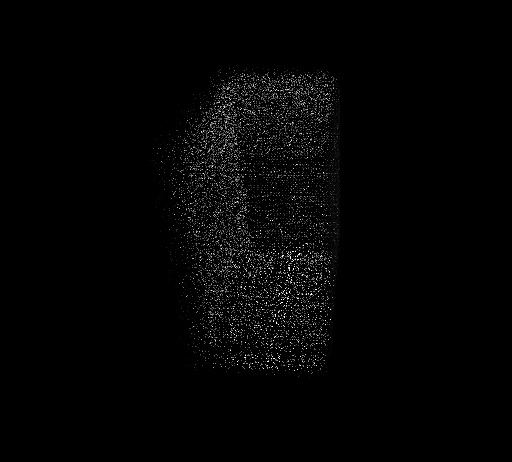

I erected a small gravestone.
A place of memorial for the living.
Alone outside a world,
Alone inside a world.
When I was a child,
I liked the bird toy that balanced
on its break.
I think I liked the feeling of touching together the center of weight, supporting each other.
The feeling of holding hands together, tightly.
When I feel like I’m barely held grounded by gravity,
I think to myself that
I’m probably that bird.
The bird’s backside is black
and the stomach white.
Finger, the color of apricot.
Contact, connection - the color’s boundary blurs.
Similar things cause confusion.
There are things you can touch,
and there are things that you feel as if you can touch.
All the possibilities that can exist in this world,
They have all the colors.
There are those who (that) are chosen.
There are those who (that) are copied.
There are those who (that) are appointed.
There are those who (that) went there.
There are those who (that) are still there.
There are those who (that) exist at the same time.
There are those who (that) just exists.
More things come to exist and things no longer die.